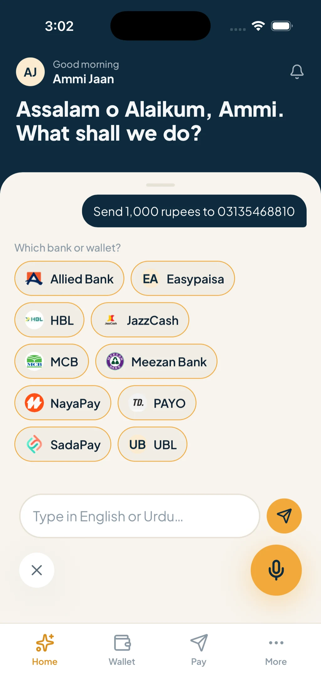
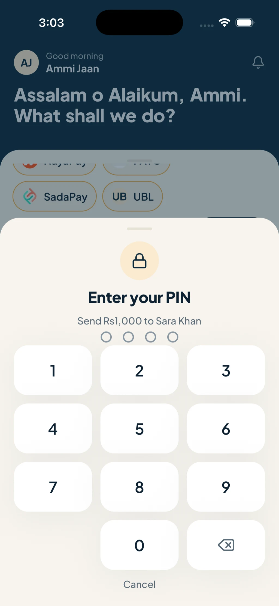
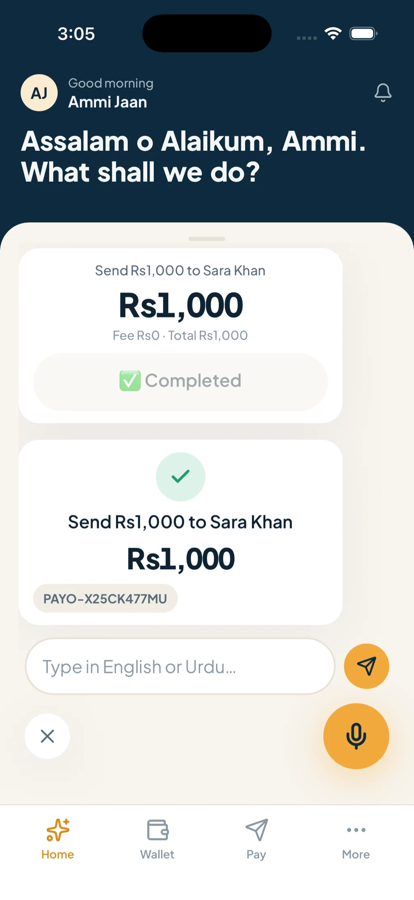
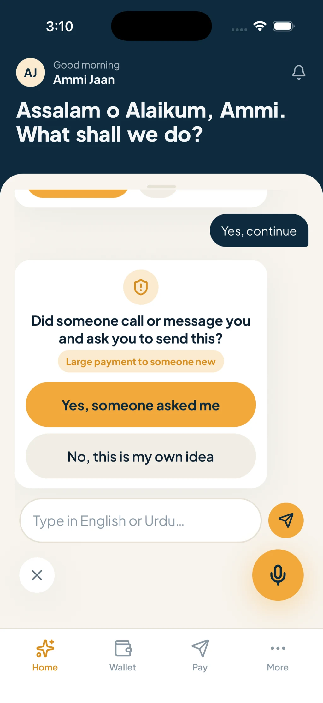
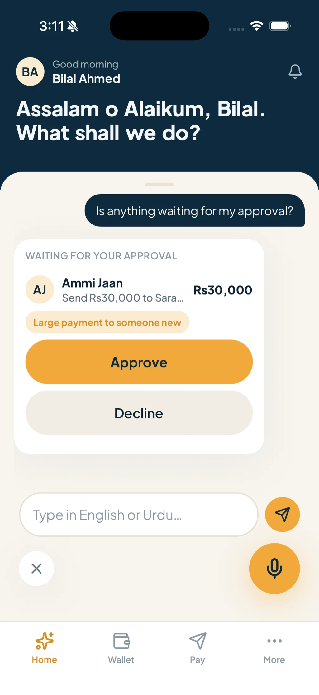
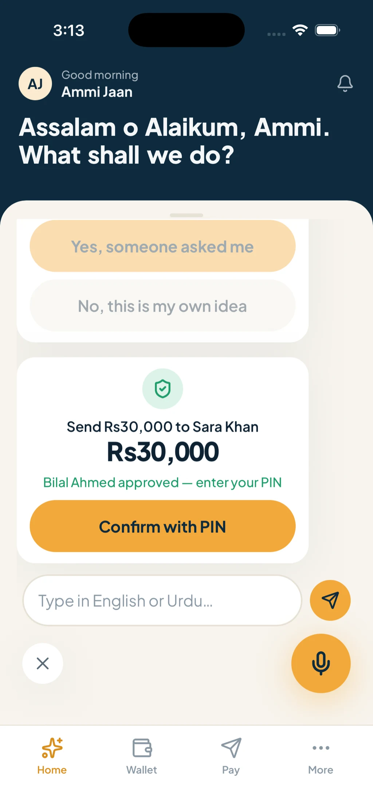
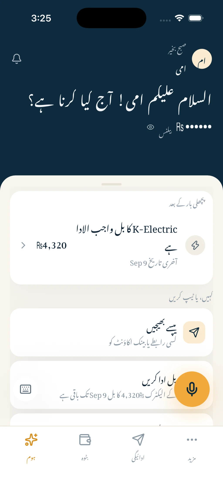
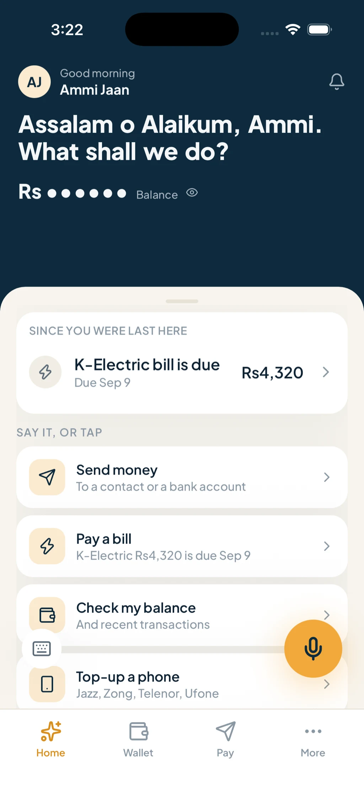
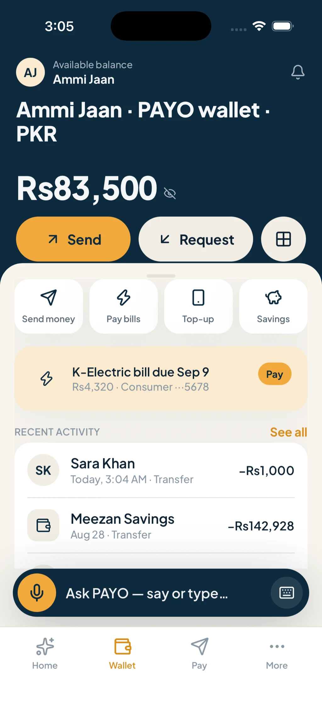

Hackathon 2026 · working demo
Banking you can talk to.
An AI assistant runs the whole app. You talk, it acts, the wallet obeys.
A wallet anyone can talk to, in English or Urdu, spoken or typed. No forms, no menus.
The problem
Every banking action is a stack of screens, taps and forms.
So we bank only when we can stop and stare at a phone. Hands wet, eyes on the road, a child on your hip, and the bank still asks you to read a menu and fill a field.
Menus assume reading
Nobody wants to browse a bank. You want to ask a question and get an answer.
Forms assume typing
An IBAN field needs both hands and all your attention. It is where the conversation ends.
Confirmations assume doubt
Under pressure anyone taps yes. Another tap changes nothing.
What the AI does
One assistant, 48 things it can do.
Every capability is a tool the assistant can reach for. It reads what you said, picks the tool, fills the gaps by asking, and hands the answer back as a card you can glance at.
32 card typesEnglishUrduRoman Urdu
Send money
Any bank or wallet in the country, or a recipient you already saved by nickname.
Bills and top-ups
Electricity, gas, internet and a mobile top-up, asked for by name and paid in the thread.
Pockets and savings
Open a pocket, name it, move money into it, and ask later how much is sitting there.
Requests
Ask someone for money, then ask who paid and who is still sitting on it.
Statements
A PDF for the period you name, built on the spot and handed back in the conversation.
Card controls
Freeze the card, unfreeze it, and read back what it has been used for.
Guardian and approvals
Add a trusted contact, then send the large or unusual ones for a second yes.
Language
English, Urdu and Roman Urdu, spoken or typed, switching inside the same thread.
How a turn works
You speak. It listens, understands, acts, and answers with a card.
01
Listen
One mic tap opens the loop. It closes itself on silence, so you never hunt for a stop button.
02
Understand
It works out what you meant and what is missing, then asks for the missing piece.
03
Act
It calls the wallet's own APIs. The same public endpoints the screens call, with your token.
04
Card and reply
A card lands in the thread and the gist is read out loud, so you can keep your eyes elsewhere.
05
Keeps listening
The loop stays open for the next thing you say, and closes when you stop talking.
The assistant holds only the user's own token. It can propose a money movement. It cannot execute one without the PIN.
It stays safe
The assistant can do everything the app does. It cannot move a single rupee.
Prepare → PIN → execute once
Three steps, one release
A write tool creates a pending action and nothing else. The PIN sheet opens in the conversation, and the assistant never sees the PIN. Then one atomic, idempotent, single-use call. Unexecuted actions expire in two minutes.
Guardian · check-in · cooling
A second pair of hands
A trusted contact approves large or unusual sends from their own phone, with their own PIN. One calm question cancels a risky send. Loosening a limit cools off first; tightening is instant.
Mock bank core (simulated)
The core still has to run
The assistant holds the user's own token, calls the same public API as the app, and has no database access. Every write is a proposal the mock bank core (simulated) still has to run.
Deterministic guards sit around the model. It is allowed to be creative about words, never about actions.
Three magic moments
What it looks like when you just talk.
Send moneyChips instead of an IBAN field, the PIN inside the chat, the receipt as a card.
The scam callOne calm question, a guardian on their own phone, then her PIN to release it.
Your language, your paceThe whole app flips to Urdu, it speaks first, and the wallet is still there underneath.









What this is not yet
Everything above is real. Here is exactly what is not.
- The world is seeded. Balances, titles, bills and card numbers are deterministic fakes.
- The institutions are simulated. No rails, no settlement ledger, no KYC, no real SMS.
- One platform. Verified on the iOS simulator; Android has not been run in weeks.
- Urdu trails English by a turn on two flows, and routing stays probabilistic.
All of it is visible in the repo.
Team PAYOHands-free banking, for everyone.